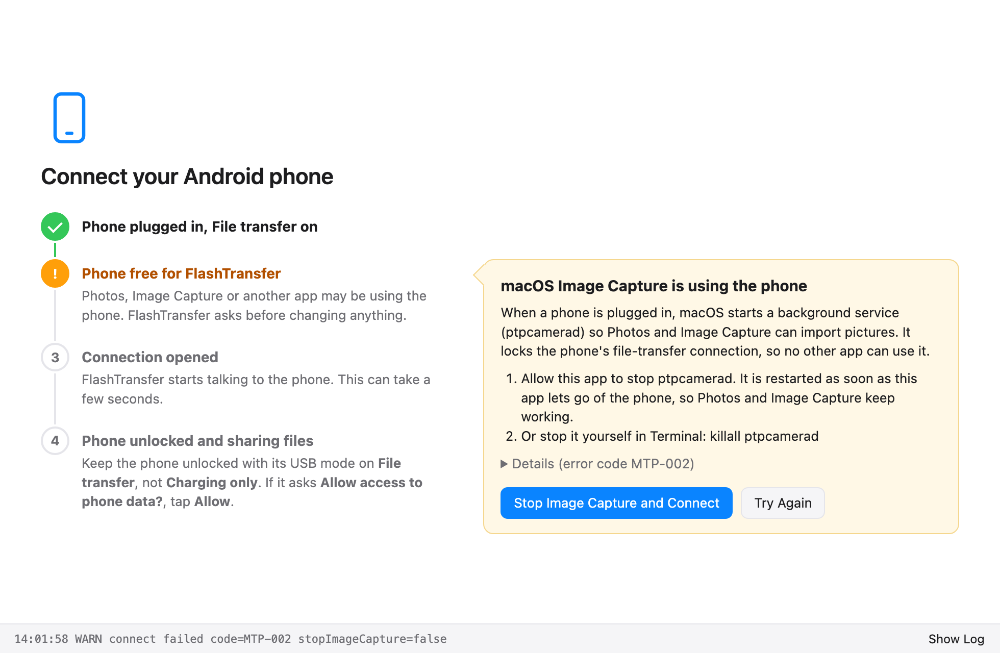

FlashTransfer
Copy photos, videos and files between your Mac and your Android phone. Just a USB cable, no accounts, no internet.
Download for MacCopy from the phone to the Mac and from the Mac to the phone. Drag files straight from Finder.
Existing files are skipped unless you choose to replace them, and a replaced file is only removed once the new copy has arrived.
See each file, the percentage, and roughly how long the copy has left. File details show an estimate before you start.
Every problem comes with a plain explanation, steps to fix it, and a log you can copy when asking for help.


Install
- Download the latest FlashTransfer.dmg from the releases page.
- Open it and drag FlashTransfer into Applications.
- Open FlashTransfer from Applications.
FlashTransfer is not yet signed with an Apple developer certificate, so macOS asks you to confirm the first time. Click Done, open System Settings > Privacy & Security, scroll down and click Open Anyway next to FlashTransfer, then confirm. You only need to do this once.
Use it
1. Connect your phone
- Plug the phone into your Mac with a USB cable. Some cables only charge; use one that came with a phone if you can.
- Unlock the phone.
- On the phone, pull down the notifications, tap the USB notification and choose File transfer. If you don't see these options, unplug the cable and plug it back in.
- If the phone asks Allow access to phone data?, tap Allow.
FlashTransfer finds the phone by itself. The bar at the bottom of the window shows what it is doing at every step.
2. "macOS Image Capture is using the phone"
When a phone is plugged in, macOS starts a background service so Photos and Image Capture can import pictures. That service locks the phone, so no other app can reach it. FlashTransfer explains this and only stops the service when you click Stop Image Capture and Connect. It starts the service again as soon as FlashTransfer lets go of the phone, so Photos keeps working. Nothing is uninstalled or changed permanently.
3. Copy files
- To your Mac: select files or folders, click Copy to Mac, and choose where to save them.
- To your phone: open the folder you want on the phone, then click Copy to Phone or drag files from Finder onto the window.
- Select several items with Cmd-click or Shift-click, or all of them with Cmd+A. Double-click a folder to open it.
- Select a file to see its size, date and an estimate of how long it takes to copy.
4. Disconnect
Click Disconnect before unplugging. FlashTransfer releases the phone and hands it back to Photos and Image Capture.
Troubleshooting
Every problem shows a code. Find it below. If you need help, click Show Log at the bottom of the window, then Copy Log, and paste it into a new issue.
MTP-001No phone found
Use a data cable, not a charge-only one. Unlock the phone and choose File transfer in its USB notification. If the options don't appear, unplug and plug the cable back in. Try another USB port.
MTP-002macOS Image Capture is using the phone
Click Stop Image Capture and Connect. See Use it, step 2 above for what this does.
MTP-003Another app is using the phone
Only one app can use the phone at a time. Quit the app named in the message, for example OpenMTP or Android File Transfer.
MTP-004Could not open a connection to the phone
FlashTransfer already retries by itself. Unlock the phone and keep the screen on. If it still fails, unplug the phone, wait 5 seconds and plug it back in. Restart the phone if it keeps happening.
MTP-005Phone storage is not visible
Android hides its files until the phone is unlocked and you allow access. Unlock the phone and tap Allow if asked.
MTP-006File or folder not found on the phone
The item was moved or deleted on the phone. Click the refresh button to reload the folder.
MTP-007Files skipped because they already exist
Nothing was overwritten. Click Replace Them if you do want the new copies.
MTP-008Phone storage is full
Free up space on the phone, then copy again.
MTP-009The transfer stopped
The phone stopped responding, for example because the cable moved, the USB mode changed, or the phone locked. Unlock the phone, check the cable and copy again. Finished files are kept; the interrupted one is not left half-written.
MTP-010macOS Image Capture could not be restarted
Photos and Image Capture may not see phones until the service runs again. Unplug the phone and plug it back in. If Photos still can't see it, restart the Mac.
Privacy
FlashTransfer works entirely offline. It has no accounts, no analytics and no network access; your files only move between your phone and your Mac.